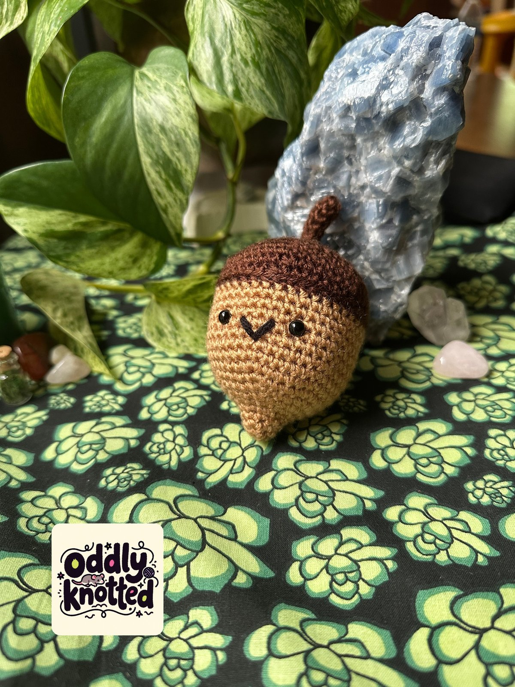
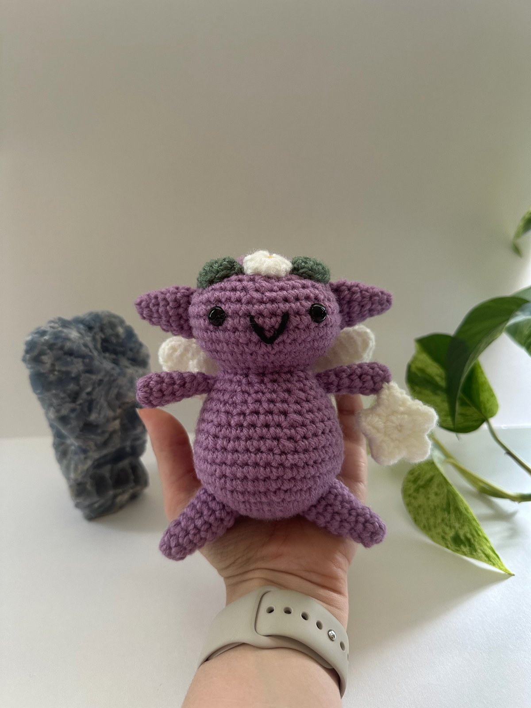

ソリー・ザ・サン。黒い目、ピンクのほっぺ、刺しゅうの笑顔がある、マスタードイエローのかぎ針編みの太陽のあみぐるみが正面を向いて座っています。
Add your best full-body Solly photograph
ソリー・ザ・サン。黒い目、ピンクのほっぺ、刺しゅうの笑顔がある、マスタードイエローのかぎ針編みの太陽のあみぐるみが正面を向いて座っています。
Add your best full-body Solly photograph
Amigurumi · Original design · 2026
Solly the Sun
Solly is a cheerful, plump little sun with seven individually attached rays, tiny limbs, and a simple embroidered smile. The design focuses on approachable construction with thoughtful shaping and finishing details.
Solly is available as a finished handmade piece through oddly knotted and as a professionally written crochet pattern on Ravelry.
AmigurumiOriginal patternTwo sizes
日本語で読む · Read in Japanese
ソリー・ザ・サン
ソリーは、七つの光の飾りと小さな手足、刺しゅうの笑顔がある、かわいい太陽のあみぐるみです。作りやすい形と、細かい仕上げを大切にしてデザインしました。
完成品は oddly knotted で、編み図は Ravelry でご覧いただけます。

Add your best full-body Alby photograph
Crochet · Original design · 2025
Alby the Acorn
Alby is a small original acorn, about 3 inches tall.
Finished handmade pieces of Alby are sold at oddly knotted on Etsy.
About 3 inches
日本語で読む · Read in Japanese
アルビー・ザ・エイコーン
アルビーは、高さ約3インチの小さなどんぐりです。
完成品は Etsy の oddly knotted で販売しています。

Add your best full-body Chubby Sprite photograph
Crochet · Original design · 2025
Chubby Sprite
Chubby Sprite is a round, pixie-like crochet plush, about 5 inches tall. Colors, expressions, and wings can vary.
About 5 inches
日本語で読む · Read in Japanese
チャビー・スプライト
チャビー・スプライトは、高さ約5インチの丸いあみぐるみです。色や表情、羽はひとつずつ違います。
 Add your best full-body Bibble photograph
Add your best full-body Bibble photograph
Crochet · Original design · 2025
Bibble the Blueberry
Bibble the Blueberry is a small crochet blueberry, about 2.5 inches from the leaves to the bottom. The pattern uses US terms, is available free, and was published on June 10, 2025.
Finished handmade pieces of Bibble are sold at oddly knotted on Etsy.
Original patternUS termsAbout 2.5 inches
日本語で読む · Read in Japanese
ビブル・ザ・ブルーベリー
ビブルは、葉っぱから底まで約2.5インチの小さなブルーベリーです。編み図は米国式用語で、無料です。2025年6月10日に公開しました。
完成品は Etsy の oddly knotted で販売しています。編み図は Ravelry でご覧いただけます。